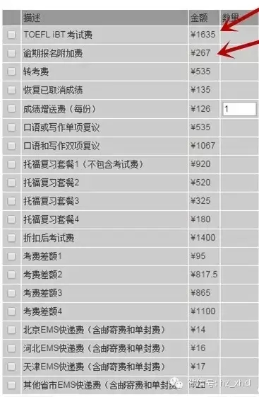

托福网考网上报名程序说明
中国大陆地区，考生须通过教育部考试中心报名网站报考托福网考。为确保报名成功，请务必仔细阅读报名程序和完成所有步骤。
报名前的准备：
1。电脑要求：
您的电脑应与互联网相连接并且装有网络浏览器(建议使用IE浏览器)。推荐显示分辨率为1024X768。中国考生须提供本人的简体中文姓名和邮寄地址。因此，中国考生须使用简体中文操作系统输入汉字。
2。付费须知
您可使用中国工商银行或中国招商银行的网上付费服务进行托福网考网上报名付费，这将使您可在互联网上一次完成全部报名程序，并支付较低的手续费。如使用网上支付功能，当您决定取消报名时，所支付的考试费将会被退回到您的银行卡上。当您希望使用网上付费，又没有上述两家银行的电子商务卡，请到中国工商银行或中国招商银行营业厅去办理电子商务卡。中国工商银行(http://www.icbc.com.cn)和招商银行(http: //www.cmbchina.com)在其网站和营业厅均备有相关服务的详细资料。除网上付费，托福网考付费还可通过银行电汇实现。
3。所需要个人资料
首次访问托福网考报名网站时，网站会要求您创建个人档案。创建个人档案需要的个人基本资料有：中文姓名和姓名拼音/英文姓名(中国大陆考生请按新华字典规则输入标准汉语拼音，中国香港、澳门和台湾考生请以身份证件上的拼音或英文姓名为准;非中国籍考生请输入护照上显示的英文姓名)、身份证件类别、证件号码、生日、电话号码、电子邮箱地址以及通信邮寄地址。上网前请确认您拥有以上所有信息以及他们的真实性和准确性，否则将会导致您无法获得托福网考的考试信息和考试成绩，考生须对本人所提交的错误信息造成的后果负责。
4。考生须知
报名前，您须认真阅读托福网考考生手册(中国版)，点击网站菜单中的“考生须知”可下载此手册。在开始网上注册前，会要求考生阅读网上报名协议，您须点击“同意”相关条款，才能继续进行网上报名操作。
报名程序：
一个完整的托福网考报名，须按顺序完成下列步骤：
第一步：注册成为网上报名系统用户，创建个人档案
第二步：支付考试费
第三步：注册考试
第四步：填写背景调查
您须按顺序依次进行以上四步，全部完成后，报名才算完成并得到确认。四个步骤的详细说明如下：
第一步： 注册成为网上报名系统用户，创建个人档案
首次使用教育部考试中心托福网考网上报名系统，须先注册成为用户。完成这一步，您需要提供基本的个人资料有：姓名、证件号码、邮寄地址、电话号码和电子信箱地址，并为自己设置密码用来以后登录个人档案。提交所需要的资料后，教育部考试中心报名系统分配给您的一个NEEA用户(NEEA user ID) 号码。注册之前，您将看到网上报名协议，它为网上报名系统用户设定了相应的条款。您须点击“同意”按钮，同意遵守这些条款，否则，系统将不允许您进行注册。当成功注册成为系统用户后，系统将向您的电子邮箱发送一封确认邮件。
重要提示：
请牢记NEEA用户号(NEEA user ID)和密码。建议您将它们妥善保管。与他人分享您的NEEA用户号(NEEA user ID)和密码将可能导致在未经授权的情况下，您个人的托福网考报名信息遭到篡改或损害。
您所提交的信息只用于与您本人联系及在考试安全方面使用。
每次登录教育部考试中心网上报名系统，都要输入您的NEEA用户号(NEEA user ID)和密码。登录后，系统进入一个属于您个人的区域——“我的主页”。在这里，您可以：为要注册的考试或预定的服务进行支付，选择考试时间和地点注册考试，查看您的支付情况，确认您的考试时间和地点，或重新注册考试，或取消已注册的考试，还可查看您的成绩。您的个人联系信息也显示在这里，点击“更新联系信息”可更改地址和电话号码。
使用NEEA用户号(NEEA user ID)可在网上多次报考托福网考考试。
重要提示：
您的姓名(中文和英文)、性别、身份证件类型、证件号码和生日，这些主要信息将用于托福网考考试。请确保这些信息是真实和准确的。一旦提交，系统将不允许更改。
第二步：支付考试费
“我的主页”提供给考生“付款”链接。在注册考试或预定服务前，您须先支付费用，支付成功后，才可注册或预定。我们建议您尽早计划可能要选择的服务以便随时注册或预定。
点击“付款”链接，所有托福网考提供的服务和相关费用显示如下：

点击每项服务左边的框即可选择您要的服务。请至少选择一项，然后点击“继续”进入支付方式页面。
目前提供的支付方式共有三种：
通过中国工商银行进行网上付费
通过中国招商银行进行网上付费
通过任何银行将费用电汇至教育部考试中心指定的银行帐户
网上付费：
通过点击相应的中国工商银行或中国招商银行网上付费按钮便可开始进行网上付费。您将被引导到中国工商银行或中国招商银行的安全网页。要进行网上支付，您须拥有一张中国工商银行或中国招商银行的网上支付卡，请通过浏览他们的网站或询问营业点获得网上支付卡。
请按照银行网页的要求完成付费程序。付费完成后，银行系统会自动引导您回到报名网站。同时，请记录下银行提供的交易号码(支付号)，以便日后核对和查询付款。通常情况下，报名系统会立即收到您的付款确认。偶尔，银行系统会延迟向报名系统确认考生的付款或因考生主动关闭银行安全网页而无法立即获得付款确认。因此，请在付款1个工作日后，登录报名网站进入“我的主页”核实您的付费和报名状态。如仍未看到付费确认，请拨打教育部考试中心托福网考考试呼叫中心寻求帮助。如您在银行网页上付费时网络连接突然中断，这时您的网上付费有可能未成功，请拨打银行服务热线确认您的付款是否完成。当报名系统收到银行的付费确认后，会给您的电子邮箱发一封确认邮件。请注意，除规定的考试费外，您还须向银行支付服务费，中国工商银行和中国招商银行对每笔托福网考网上付费收取的手续费标准如下：
单次交易额(元)手续费
500以下(不含500)2元/次
500—3000(不含3000)6元/次
3000—5000(不含5000)8元/次
5000以上(含5000)10元/次
银行电汇付费：
点击电汇按钮，您将看到有关通过电汇方式向教育部考试中心指定的银行帐户支付托福网考费用的重要信息。这些信息包括：开户银行户名、银行帐号、开户银行名称和地址，以及应汇款的人民币金额。请将屏幕上显示的上述信息准确地记录或打印下来。携带上述资料到银行的营业厅办理电汇(任一银行均可办理)。你需要在银行填写一张电汇汇款单，请确保您所填写的相关信息与托福网考网站的要求一致并准确无误。请妥善保管电汇凭单以便将来查询。一般情况下，网上报名系统将在 1至5个工作日之内确认收到您的汇款。请在办理完成汇款至少两天之后登录报名网站进行查询。如5个工作日后汇款仍未得到确认，请拨打教育部考试中心托福网考呼叫中心寻求帮助。考生有责任将报名网站提供的电汇信息准确完整地记录。除规定的考试费外，您还须向办理电汇的银行支付汇款总额1%的手续费。
成功支付后，可上网查询您的帐户余额(报名系统收到的，可用来购买各项服务的总费用)，帐户余额显示在“我的主页”右边，个人资料下面。此时即可预定服务。
重要提示：
电汇并非银行专为托福网考考试开设的一项特殊服务，而是银行开设的一项普通汇款服务。因此，到银行营业厅时，您须要求电汇服务。若只说要支付托福网考考试费，银行营业员会不清楚您的要求。同时，建议不会讲汉语的非中国籍考生到中国银行柜台办理电汇，银行通常会提供英语服务。
第三步：注册考试
当“我的主页”显示的帐户余额已够支付托福网考服务项目时，点击“注册考试”，即可注册托福网考考试。
请注意：
距考试日7天前(不含考试日)为常规报名日;距考试日前第7天至考试日第3天(不含考试日)前为逾期报名日，报名要支付逾期报名附加费，考前3天停止报名。
例如：考试日为8月8日，则此次考试的常规报名将在8月1日零时截止。8月1日零时至8月5日零时为逾期报名阶段，在此阶段报名须支付逾期报名附加费。8月5日零时起停止报名。
接下来的页面供您搜索考试地点和考试日期。请至少选择一个月份和一个地区然后点击“继续”，系统会根据指定的月份和地点列举所有符合条件的考场。选择某个考场点击“注册”按扭即可，当该考场没有安排考试或者座位已全被注册完，“注册”按扭就无法点击。注册完后，屏幕会显示您注册考试的详细信息，包括考试名称、考试日期和时间、考场名称和考场地址，此页面还有一个“取消”按纽，点击它继而点击“继续”就可取消您的注册。
确认注册考试后，下一个页面会要求您输入四个免费送分学校的信息，如您还没有这方面的信息，可暂时不填。但请注意，如您想以后再给学校送分，那么每送给一个学校您就要支付人民币136元。
第四步：填写背景调查
报名的最后一步是回答关于您个人背景信息的问题，这部分为自愿项，也可选择不填。回答完以后，系统会要求您阅读并同意托福网考考生手册中的有关考试实施、费用支付及成绩报告方面的条款和ETS关于隐私保护方面的政策。您须选择同意，这也是您注册考试要同意的一项。至此，您已完成注册一个托福网考考试需要的所有步骤，您的邮箱会收到一封邮件确认报名成功。在“我的主页”，点击“查看已注册信息”来查看您的报名状态。
其他服务：
当您成功注册一个托福网考考试后，系统将为您提供下列相关的服务：
转考
距考试日10天前(不含考试日和申请日)，您都可以申请转考。但只有在您要重新注册的日期和考场仍有空位时，转考才可能进行。您须首先支付转考费并在“我的主页”中确认支付成功，然后通过 “查看已注册信息”申请转考。如您已支付转考费因没有空位或超过转考截止日而未能成功转考，可将此款继续留在帐户中以便日后申请其他服务也可申请退款。
取消
距考试日10天前(不含考试日和申请日)，您均可申请取消考试。成功申请取消考试，您将获得相当于考试费50%的退款，其余50%被保留的费用将用于支付您的报名工作和预留考场座位的费用，而不退还给您。逾期报名附加费不予退还。退款不会自动处理，在网上取消申请后，您须向教育部考试中心托福网考呼叫中心传真一份退款申请，传真内容包括您的NEEA ID、姓名、生日、签名、证件号码以及证件的复印件等，传真号码是86-10-62798822-1-3或86-10-82520250，传真后再致电呼叫中心确认退款事宜。退款申请表可在考生须知中下载。
成绩增送
托福网考向考生指定的四所学校免费送出正式成绩报告。如需将成绩给这四所之外的学校，您可申请每份136元的成绩增送服务。通过“查看已注册信息”就可申请此项服务，申请前请确认您已支付成功或您的帐户余额充足。同时，请考生保证送分学校信息的正确性。
成绩复议
考试结束后三个月内，可对您的写作和口语考试成绩提出复议。您可申请写作或口语单项复议，也可同时对两项提出申请。一次考试只能申请一次复议，也就是说，您不可以对某次考试先申请口语部分复议，随后再申请写作部分复议。申请写作或口语部分单项复议的费用是480元人民币，申请两项复议的费用是960 元人民币。申请成绩复议，您须先支付成绩复议费，通过 “查看已注册信息”下载打印成绩复议申请表，填写完毕、签字，然后传真至86-10-62798822-1-3或86-10-8252-0250。
恢复已取消的成绩
考试当天，如您在考试结束后已取消自己的成绩报告，此后如希望恢复该成绩，您可在考试日后10天内向呼叫中心提出申请，费用是人民币160元。申请恢复已取消的成绩，您须先支付费用，通过“查看已注册信息”下载打印申请表，填写完毕、签字，然后传真至86-10-62798822-1-3或 86-10-8252-0250。